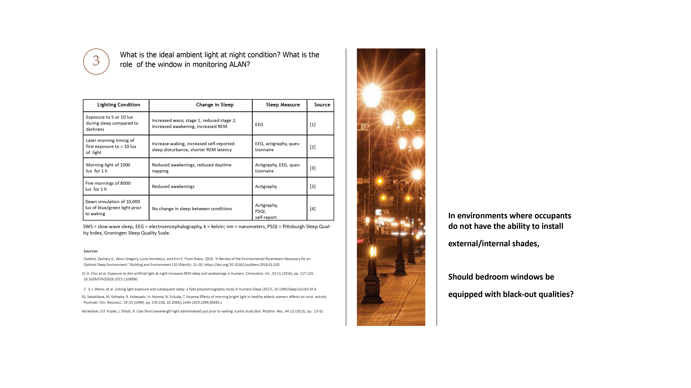
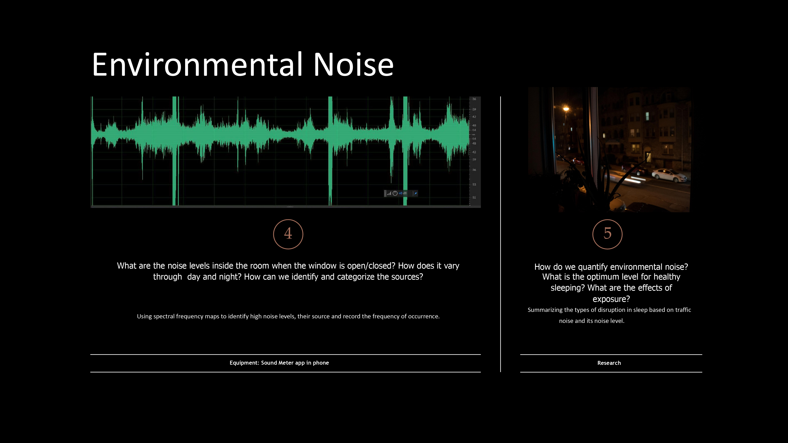
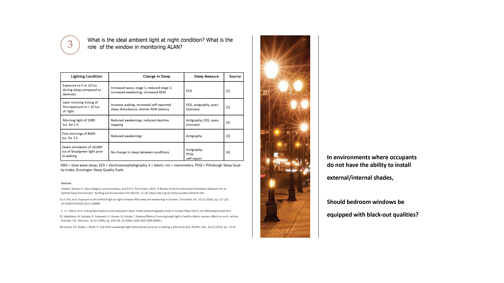
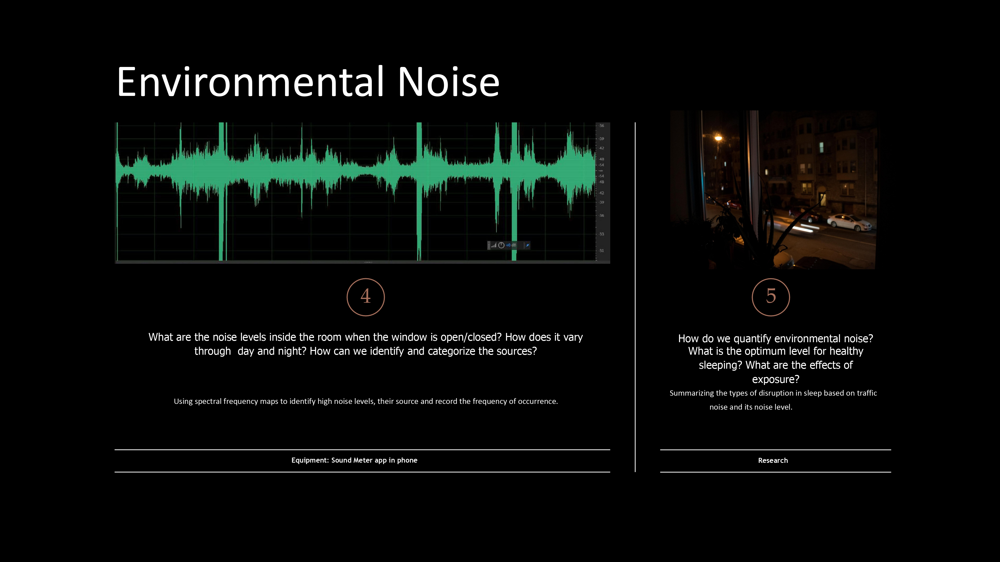
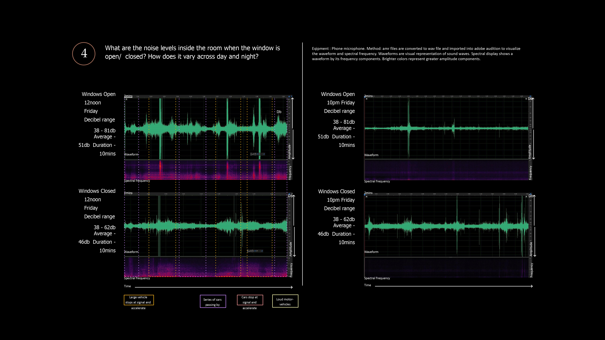
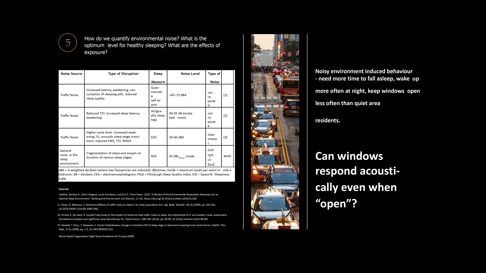
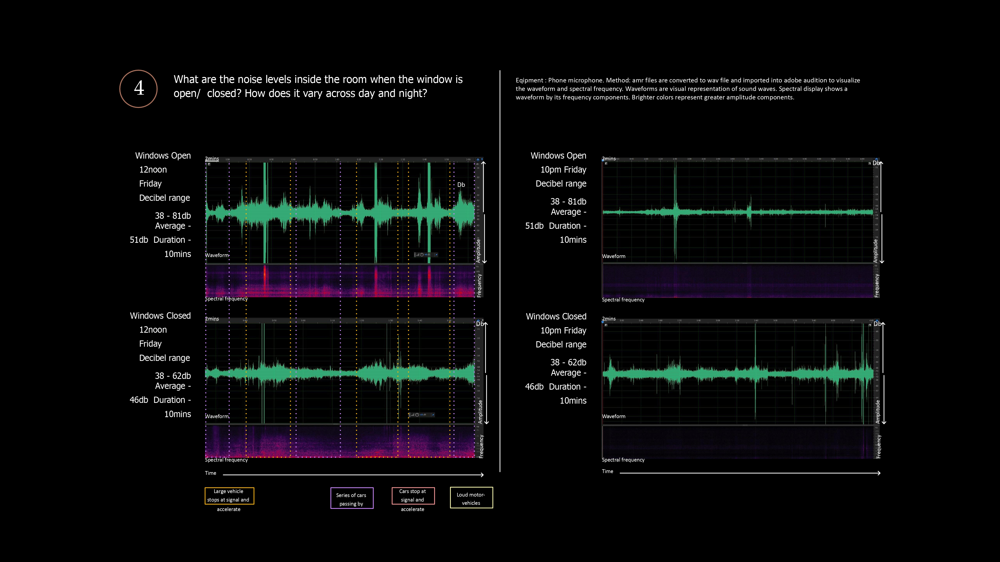
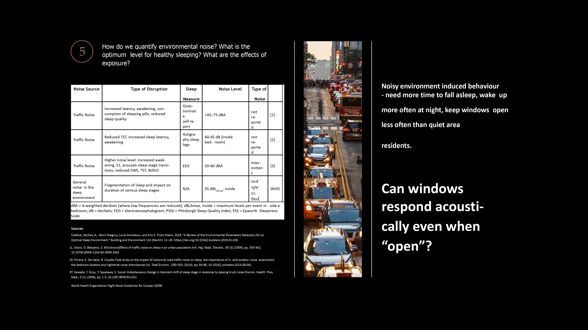

Window & Sleep Quality
The project explores the cultural and environmental demands and potentials of windows. My research explores how windows affect sleep quality through two often-overlooked factors: ambient light at night and environmental noise. Rather than evaluating windows solely for thermal performance or views, the project centers on occupant wellbeing and circadian health.
Using a post-occupancy evaluation framework, this study aims to understand the window's role as a mediator between exterior conditions and interior comfort. Ray tracing identified the impacts of external light sources like street lamps and traffic signals, while RGB imaging photometry captured how nighttime light actually affects human photoreceptors. Light sensors tracked exposure patterns from the window sill to bedside, documenting how much daylight enters the space in early mornings. Acoustic measurements compared sound levels with the window open and closed across different times of day. Spectral frequency analysis revealed the character of noise from idling vehicles to accelerating traffic that penetrates the interior.


 



 


